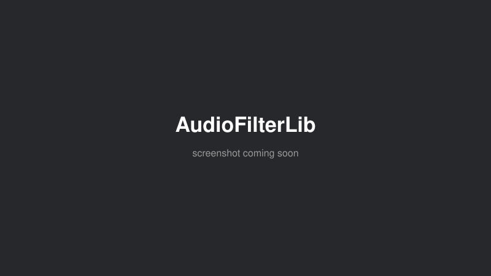

A high-performance C++ digital signal processing library for real-time audio filtering, built to sit underneath instruments and installations that need clean, low-latency signal shaping. It implements both IIR designs (Butterworth for a maximally flat response, Chebyshev Type I for steeper rolloff) via cascaded Direct Form II biquads, and FIR designs via windowed-sinc methods with Kaiser, Hamming and Blackman windows for guaranteed linear phase. Underneath: lock-free ring buffers for multi-channel audio, SIMD-optimized biquad processing, sample-by-sample or frame-based processing modes, and WAV I/O — with unit tests, performance benchmarks, CI, and API docs, aiming for production use rather than a one-off sketch.
